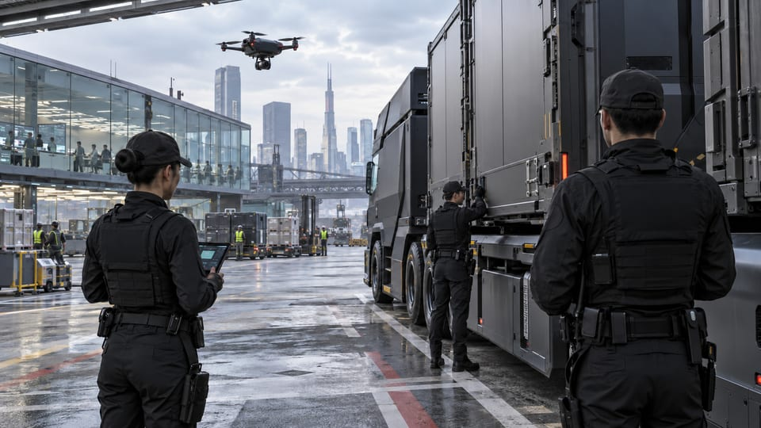

01 / SEC / DEF
Security & Defense
Arasaka brings protective services, defense manufacturing, and field operations together. From a single executive detail to an international industrial network, protection is designed around the whole assignment.
Explore the business